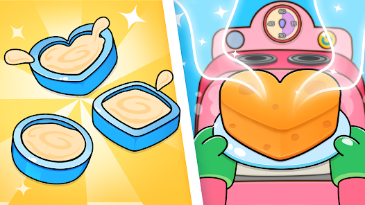

Cake Maker For Kids
Built on the successful framework of "Pizza Maker For Kids," "Cake Maker For Kids" maintains a sense of familiarity while delivering a brand-new culinary escapade. The shared code ensures a seamless and reliable foundation, offering a consistent user interface and experience. Similar to its pizza counterpart, the game boasts an intuitive cake customization interface. Kids can now tap their way through the delightful process of selecting cake shapes, choosing from a myriad of toppings, and witnessing the magic of baking unfold. While the core code remains largely similar, careful tweaks and adjustments have been made to accommodate the unique characteristics of cake-making. This ensures that the game feels tailored to the specific joys and challenges associated with crafting delectable desserts. The underlying code's adaptability allows for easy implementation of future enhancements and updates. This flexibility ensures that the game can evolve with new features, keeping the experience fresh and exciting for its young audience.
This game is currently available on Android and iOS, both platforms to download.
Android - Cake maker: Kids cooking games
iOS - Cake Maker Piggy Panda